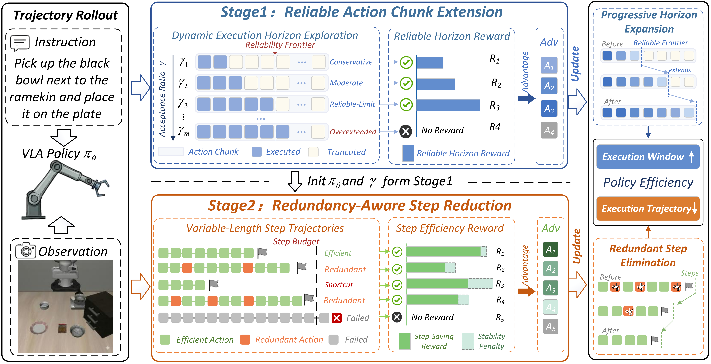

PolicyTrimPolicyTrim: Boosting Intrinsic Policy Efficiency of Vision-Language-Action Models
ECCV 2026European Conference on Computer Vision
Two-stage RL post-training to extend reliable action chunks and reduce redundant physical execution.
BibTeX
@inproceedings{policytrim2026,
title = {PolicyTrim: Boosting Intrinsic Policy Efficiency of Vision-Language-Action Models},
author = {Xianghui Wang and Feng Chen and Wenbo Zhang and Hua Yan and Zixuan Wang and Changsheng Li and Yinjie Lei},
booktitle = {European Conference on Computer Vision (ECCV)},
year = {2026}
}